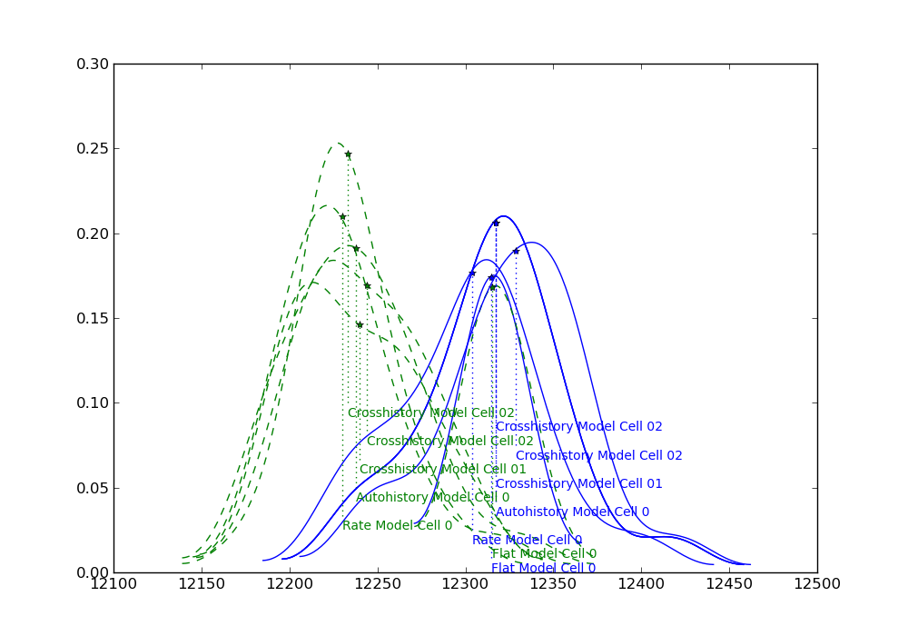
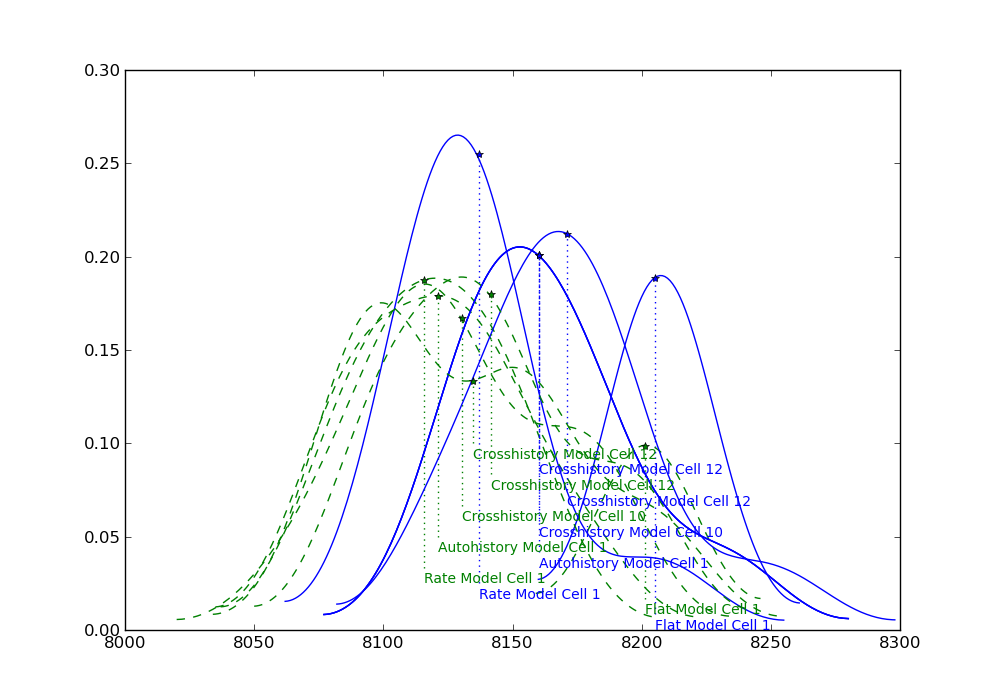
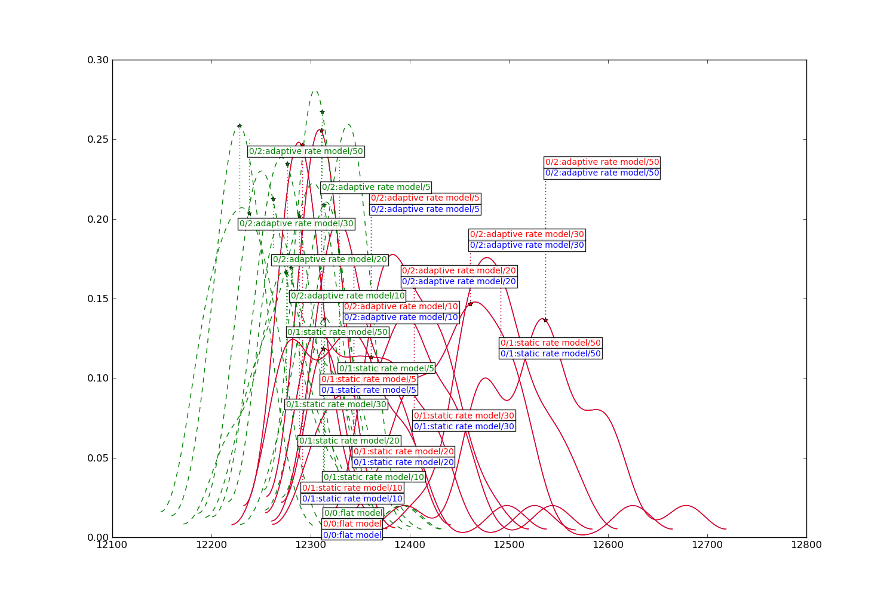
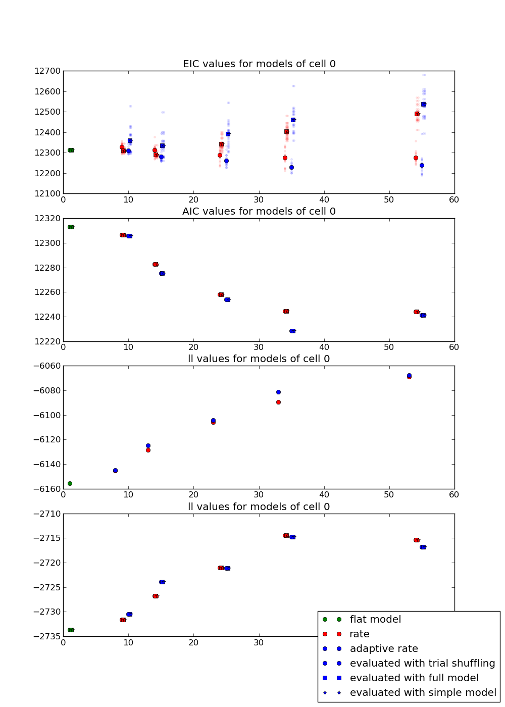
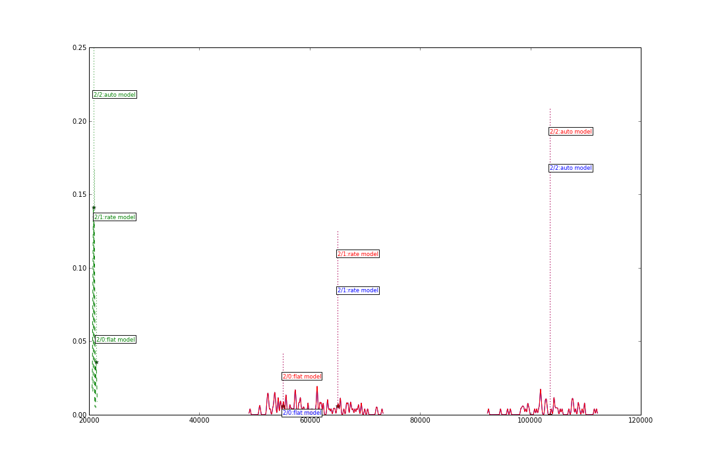
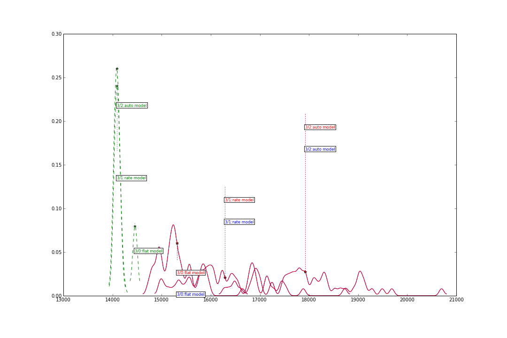
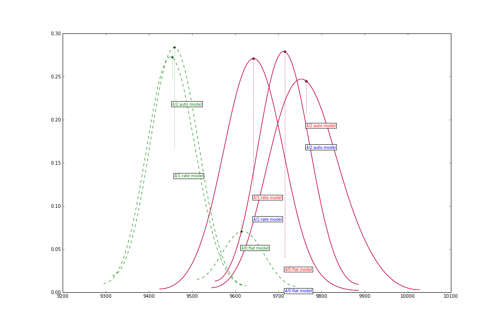
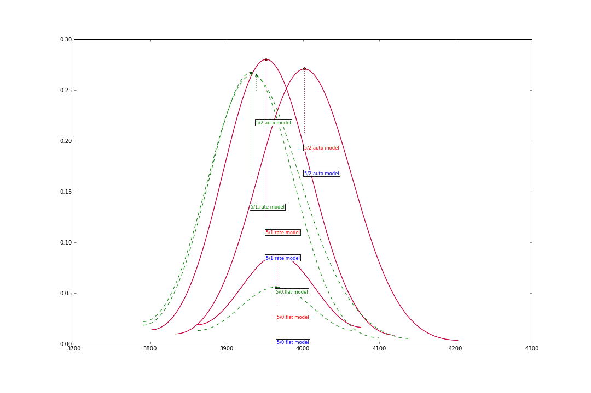
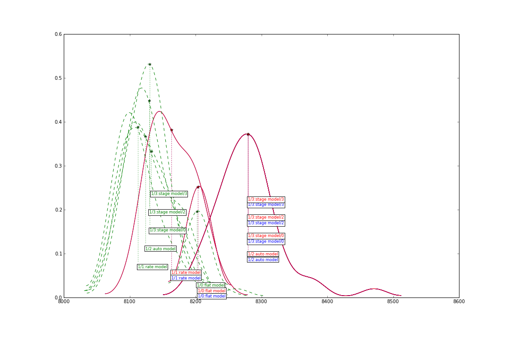

Evaluating models via EIC can be done either via trial shuffling or via a generative model. Depending on the model, these methods can vary largely.
The three two plots show varying complex models evaluated with trial reshuffling (green) and a probability model (blue).
The flat model results in the same EIC, more complex models are evaluated very differently via trial reshuffling.
 The next plot shows rate only models with increasing number of knots and either adaptive or non-adaptive knot spacing. Green is trial shuffling, red and blue are a full model (rate, auto- and crosshistories) and model that only includes rate and autohistory. The two models do not differ in their model evaluation, which makes sense, since only rate models are evaluated.
Sorting the models by complexity, it is noticable that with increasing complexity the difference between trial reshuffling and probability resampling is increasing
The next plots compare a flat model, rate model, autohistory model and crosshistory model via trial shuffling and probability resampling.
The probability resampling creates very spaced out populations of EIC values, while the trial reshuffling is very compact. Trial based evaluation produces a higher EIC for the flat model than the more complex models, the probability resampling does the opposite. (red and blue are equivalent evaluation models and should be seen as the same curve)
   The following models contain crosshistory parameters. There is not a lot of difference between using only the autohistory, or any of the other cells as a crosshistory for prob. resampling. The trial resampling does distinguish between those models.
